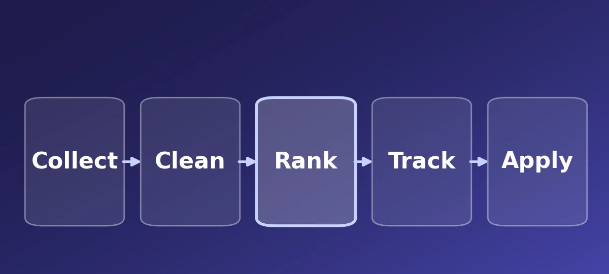

Case studyGenAI · Multi-LLM system
Multi-LLM GenAI Job-Search Agent
A multi-LLM system that collects 2,000+ live roles a day from 9 ATS APIs and job boards, scores each one against my CV with a three-model LLM-as-a-judge cascade, and assists with applications through a Chrome extension that learns from my edits.
2,000+ roles a day3-model LLM cascade140+ automated tests
Read the case study Private repository